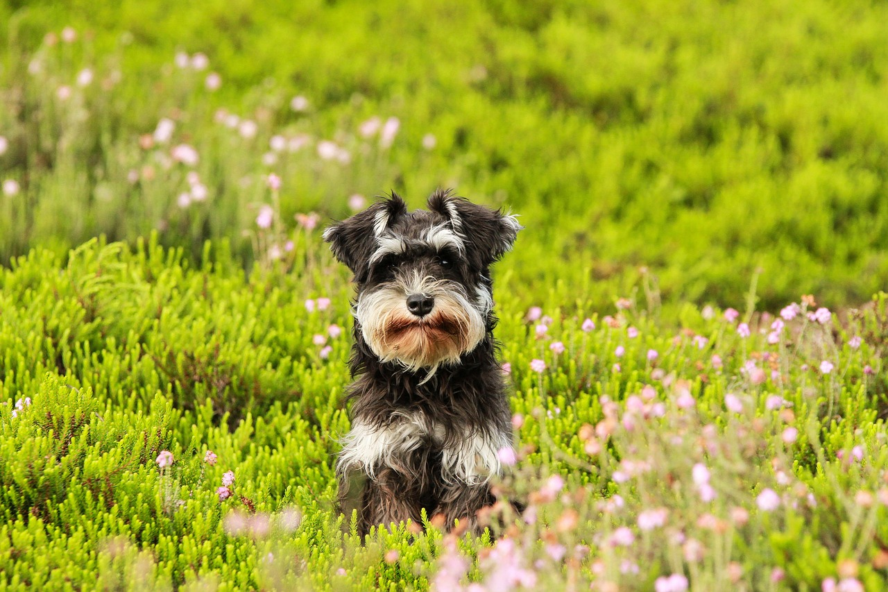

O schnauzer é cheio de vida e sempre se mostra pronto para uma aventura ou brincadeira com sua família. Bem enérgicos, eles podem ficar tranquilamente por horas correndo atrás de uma bolinha, sem demonstrar cansaço. Apegados aos seus tutores, eles costumam ser um pouco mais arredios com estranhos, especialmente dentro de suas casas, onde podem se mostrar bem protetores e até territorialistas. O schnauzer miniatura costuma latir bastante e é preciso direcionar seu pet corretamente desde filhote para que isso não se torne um problema.

